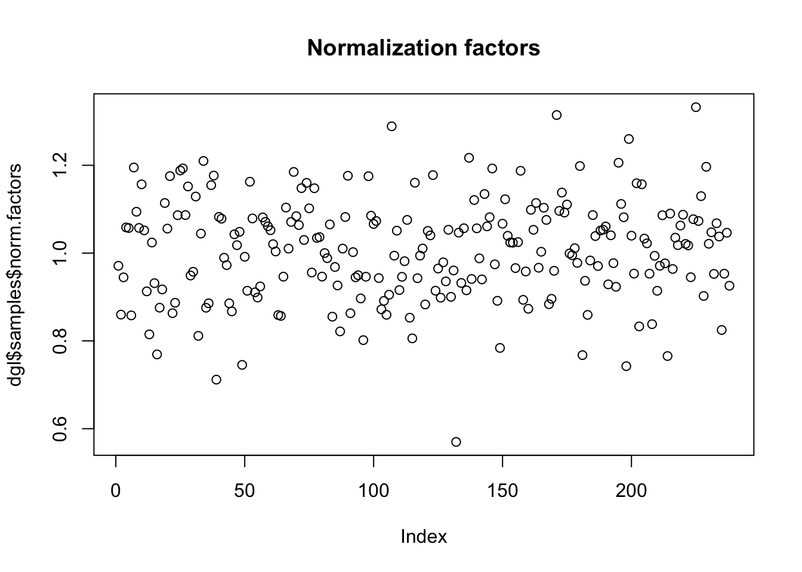
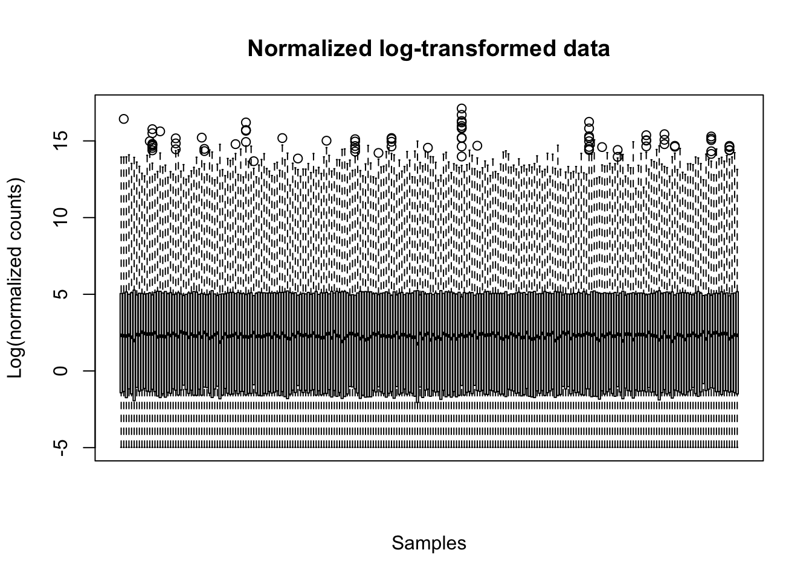
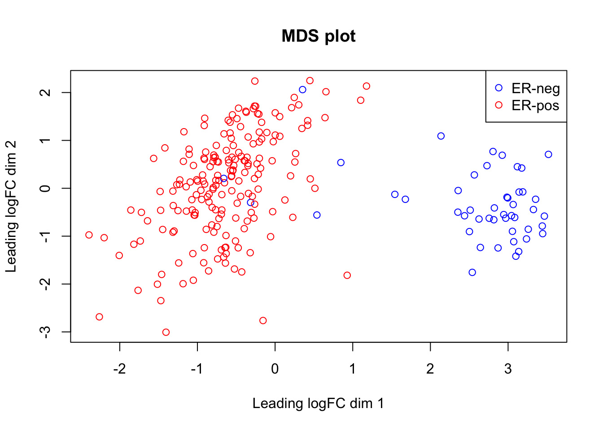
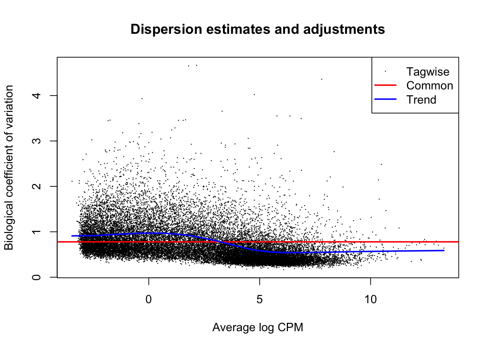
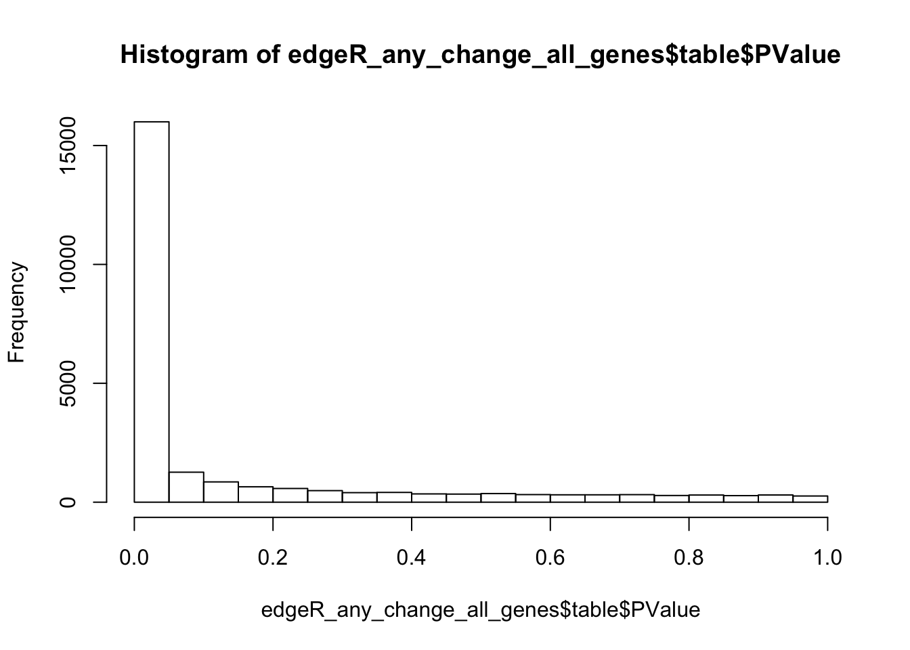
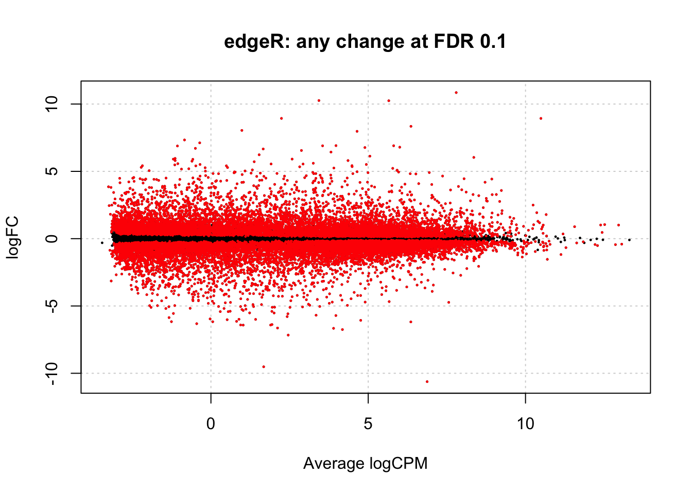
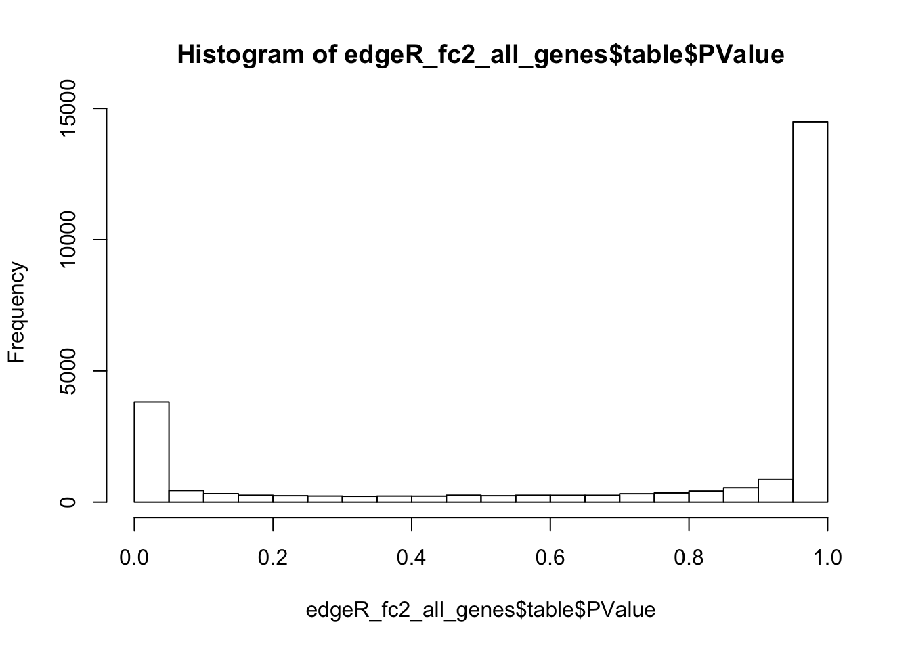
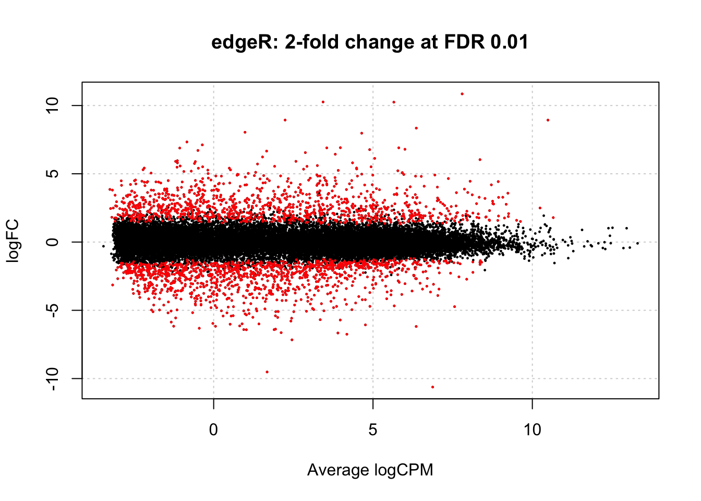

6 edgeR analysis
First, we load edgeR library:
#install.packages("BiocManager")
#BiocManager::install("edgeR")
suppressWarnings(suppressMessages(library(edgeR)))6.1 Read HTSeq counts to DGEList
Prior the analysis edgeR needs to collect all necessary information. edgeR collects the counts, samples and genes data in a single list called DGEList. To facilitate the data input edgeR provides a function called readDGE that makes a single matrix from multiple files, allows adding sample information etc.
The function can read tabulated text files of arbitrary format, as long as one of the file’s columns contains genes names and another column contains the counts. Format of an HTSeq counts file can be explored using Bash functions head and tail:
## ENSG00000000003.13 2569
## ENSG00000000005.5 1
## ENSG00000000419.11 3180
## ENSG00000000457.12 3332
## ENSG00000000460.15 1621
## ENSG00000000938.11 530
## ENSG00000000971.14 7282
## ENSG00000001036.12 3312
## ENSG00000001084.9 2642
## ENSG00000001167.13 3322
## ...
## ENSGR0000275287.3 0
## ENSGR0000276543.3 0
## ENSGR0000277120.3 0
## ENSGR0000280767.1 0
## ENSGR0000281849.1 0
## __no_feature 3069305
## __ambiguous 3368739
## __too_low_aQual 0
## __not_aligned 0
## __alignment_not_unique 23748640It can be seen that an HTSeq counts file fits readDGE requirements, except for some summary lines at the end of the file. Luckily, readDGE can take care about these summary lines with comment.char option. Finally, header = FALSE should be used to specify that the 1st row contains data, not the header:
# Counts folder
counts_folder=file.path(base_folder,"data","HTSeq_counts")
# Read HTSeq counts to DGE object
# ("dgl" stands for "DGEList")
dgl <- readDGE(files=samples.df$file, # files names
path=counts_folder, # folder with count files
columns=c(1,2), # columns with gene name (1) and count (2)
labels=samples.df$patient, # samples names corresponding to the files
comment.char="_", # lines starting with this character are excluded
header = FALSE) # the 1st row contains data, not header
# Clean-up
rm(counts_folder)See readDGE help for details of other options used in the above command.
6.2 Explore and update the DEGList object
The code chunk below
- checks content of the counts’ matrix read to the DEGList object
- checks samples information and adds OCT-status as an example of potential experimental confounder
- adds genes information to the DEGList object
See DEGList help for details.
# Check content of created DEGList
names(dgl)## [1] "samples" "counts"# The counts matrix is identical to the counts in DESeq2DataSet
dim(dgl$counts)## [1] 60483 238dgl$counts[1:5,1:5]## Samples
## Tags TCGA-A7-A0DA TCGA-D8-A1XU TCGA-D8-A143 TCGA-A7-A4SB TCGA-D8-A1XR
## ENSG00000000003.13 2724 5645 6180 2558 3884
## ENSG00000000005.5 7 6 1 32 109
## ENSG00000000419.11 1962 4926 2624 1068 3337
## ENSG00000000457.12 1973 2271 1860 1362 4953
## ENSG00000000460.15 867 675 2359 494 2284# Add information about the exparimental groups for DEG detection (ER status)
head(dgl$samples)## files group lib.size norm.factors
## TCGA-A7-A0DA a33029dd-b5fa-4be0-9cbf-971d289146dd.htseq.counts.gz 1 66687895 1
## TCGA-D8-A1XU 8d54214a-1d9b-4fea-9c42-5bbb3cd11da9.htseq.counts.gz 1 93109355 1
## TCGA-D8-A143 4b19c0e2-2a61-4f0a-9257-4a528e6b320e.htseq.counts.gz 1 55477594 1
## TCGA-A7-A4SB cc233ff9-d5fb-4e9b-9007-f58d008df995.htseq.counts.gz 1 38870554 1
## TCGA-D8-A1XR bdd8c340-250b-474a-8802-7653b7884ced.htseq.counts.gz 1 82295968 1
## TCGA-BH-A18L 5bc7e90d-0fa4-4bde-bee8-4f9b92de03a2.htseq.counts.gz 1 71552576 1# Add ER and OCT status to the samples information
dgl$samples$er <- samples.df$er
dgl$samples$oct <- samples.df$oct
head(dgl$samples)## files group lib.size norm.factors er oct
## TCGA-A7-A0DA a33029dd-b5fa-4be0-9cbf-971d289146dd.htseq.counts.gz 1 66687895 1 Negative false
## TCGA-D8-A1XU 8d54214a-1d9b-4fea-9c42-5bbb3cd11da9.htseq.counts.gz 1 93109355 1 Positive false
## TCGA-D8-A143 4b19c0e2-2a61-4f0a-9257-4a528e6b320e.htseq.counts.gz 1 55477594 1 Negative false
## TCGA-A7-A4SB cc233ff9-d5fb-4e9b-9007-f58d008df995.htseq.counts.gz 1 38870554 1 Positive false
## TCGA-D8-A1XR bdd8c340-250b-474a-8802-7653b7884ced.htseq.counts.gz 1 82295968 1 Positive false
## TCGA-BH-A18L 5bc7e90d-0fa4-4bde-bee8-4f9b92de03a2.htseq.counts.gz 1 71552576 1 Positive true# Add genes information
genes.df <- genes.df[rownames(dgl$counts),] # Reorder genes to match the genes order in the counts matrix
dgl$genes <- genes.df
names(dgl)## [1] "samples" "counts" "genes"6.3 Gene filtering
In DESeq2 analysis we manually removed genes, for which less than 10 samples had count above 10. This reduced the nimber of genes from ~60k to ~28k.
edgrR has a dedicated build-in function filterByExpr to remove low-expressed genes. This function also keeps the genes with a count above 10 in a certain number of samples, depending in the groups size. Applying this function to our TCGA-BRCA dataset preserves ~24k of genes, which is reasonably close to the manual filtering applyed in DESeq2 analysis.
# Select genes with sufficien expression for comparison in ER groups
keep.exprs <- filterByExpr(dgl, group=dgl$samples$er)
sum(keep.exprs)## [1] 24361# Remove low-expressed genes
dgl <- dgl[keep.exprs,, keep.lib.sizes=FALSE]
dim(dgl)## [1] 24361 238# Clean-up
rm(keep.exprs)6.4 Normalizing by TMM
edgeR’s preferred method of normalization is Trimmed Means of M-values (TMM)
# Aply normalization
dgl <- calcNormFactors(dgl, method = "TMM")
# Look at the calculated TMM notmalization factors
plot(dgl$samples$norm.factors, main="Normalization factors")
6.5 Exploring source data
Like in DESeq2 analysis, the source data is explored in a normalized form. For this, edgeR allows to calculate log-transformed counts per million:
lcpm <- cpm(dgl, log=TRUE)6.5.1 Boxplot
The boxplot shows that counts range and central positions are similar in different samples after the normalization:
boxplot(lcpm, xaxt="n", main="Normalized log-transformed data",
xlab="Samples",ylab="Log(normalized counts)")
6.5.2 MDS plot
Multi Dimentional Scaling (MDS) is similar to PCA: it places similar samples close to each other in a 2-dimention plot. edgeR provides a function for making a MDS plot. The plot shows a clear separation of ER-positive and Triple-negative breast cancers by the genes expression.
# Colour code ER status
col_er <- as.factor(dgl$samples$er)
levels(col_er) <- c("blue","red")
col_er <- as.character(col_er)
# Make MDS plot
plotMDS(lcpm, labels = NULL, pch = 1, col=col_er,
main="MDS plot")
legend("topright", # the location of the legend on the plot
legend = c("ER-neg", "ER-pos"), # labels
col = c("blue","red"),
pch = 1) # colours
# Clean-up
rm(lcpm, col_er)6.6 Calculate DEGs
6.6.1 Specify design
Like in DESeq2 the design in edgeR is defined by a text string that follows the format of a glm formula in R: ~ oct + er. It is used to specify the variable of interest for differential expression (“er”" in our case) and the confounding variables, if any (“oct” in our case). By convention, the variable of interest should be placed is at the end of the design formula.
design <- model.matrix(~ oct + er, data = dgl$samples)6.6.2 Estimate dispersions
Like in DESeq2, the variance estimation and adjustment is a core element of building the edgeR statistical model:
dgl <- estimateDisp(dgl, design)
plotBCV(dgl, main="Dispersion estimates and adjustments")
6.6.3 Fit the model
fit <- glmQLFit(dgl, design)6.7 Extract results
The gene-wise statistical significance is extracted from the model, which has been fitted in the previous code chunk.
6.7.1 Default settings
By default edgeR calculates tests against the null hypothesis of no change (i.e. alt hypothesis of any change). The key results are written in the table slot of the specialised TopTags result object.
Note that in glmQLFTest function call the coef=ncol(design) points to the last column in the design table. You may remember that,by convention, the variable of interest was placed at the end of the design formula.
The topTags function actually prepared the table with results. By default, though, it will only show the top 10 genes… To extract results for all the genes n = nrow(x) option is used.
# Calculate the test statistics
edgeR_any_change <- glmQLFTest(fit, coef = ncol(design))
# Extract statistics for all genes
edgeR_any_change_all_genes <- topTags(edgeR_any_change, n = nrow(dgl), sort.by = "none")
names(edgeR_any_change_all_genes)## [1] "table" "adjust.method" "comparison" "test"# Explore table with results
dim(edgeR_any_change_all_genes$table)## [1] 24361 7head(edgeR_any_change_all_genes$table)## gene_id gene_name logFC logCPM F PValue FDR
## ENSG00000000003.13 ENSG00000000003.13 TSPAN6 -0.6784647 5.73670542 23.82900 1.925960e-06 6.531856e-06
## ENSG00000000005.5 ENSG00000000005.5 TNMD 1.8310633 -0.08050533 18.95597 1.984714e-05 5.666193e-05
## ENSG00000000419.11 ENSG00000000419.11 DPM1 -0.3582450 5.25058484 18.56443 2.400762e-05 6.752680e-05
## ENSG00000000457.12 ENSG00000000457.12 SCYL3 0.3891598 5.09050998 18.72840 2.216723e-05 6.275607e-05
## ENSG00000000460.15 ENSG00000000460.15 C1orf112 -0.8041035 3.83330744 54.05200 3.092747e-12 2.434327e-11
## ENSG00000000938.11 ENSG00000000938.11 FGR -0.1688074 3.34761965 1.27565 2.598416e-01 3.256509e-01Like in DESeq2 analysis, the default settings lead to an inflated number of significant p-values (if compared to the expected uniform distribution of p-values under the null):
# Plot histogram of p-values
hist(edgeR_any_change_all_genes$table$PValue)
By default, the topTags function does not apply a filter by p-value. However, such option exists. In the chunk below we apply a FDR 0.1 filter, by analogy with the default FDR threshold in DESeq2. Like in DESeq2 analysis such thersholds would suggest that more than half of the genes are differentially expressed:
# Select genes with FDR 0.1
edgeR_any_change_fdr_0.1 <- topTags(edgeR_any_change, n = nrow(dgl), p.value = 0.1)
dim(edgeR_any_change_fdr_0.1$table)## [1] 16575 7MA plot in edgeR is plotted by plotSmear function:
plotSmear(edgeR_any_change, de.tags = edgeR_any_change_fdr_0.1$table$gene_id,
main="edgeR: any change at FDR 0.1")
6.7.2 Customised thresholds
Like in the DESeq2 analysis, edgeR allows to calculate p-values for the alternative hypothesis of at least 2 fold difference at FDR 0.01. Like in the DESeq2 analysis, this improves the p-values distribution and reduces the number of suggested DEGs to less than 10% of the genes:
# Calculate significance for 2-fold change
edgeR_fc2 <- glmTreat(fit, coef = ncol(design), lfc = 1)
# Extract data for all genes
edgeR_fc2_all_genes <- topTags(edgeR_fc2, n = nrow(dgl), sort.by = "none")
# Check distribution of all p-values
hist(edgeR_fc2_all_genes$table$PValue)
# Select DEGs with FDR<0.01
edgeR_fc2_fdr_0.01 <- topTags(edgeR_fc2, n = nrow(dgl), p.value = 0.01)
# Count DEGs
dim(edgeR_fc2_fdr_0.01$table)## [1] 2345 7# MA plot
plotSmear(edgeR_fc2, de.tags = edgeR_fc2_fdr_0.01$table$gene_id,
main="edgeR: 2-fold change at FDR 0.01")
# Clean-up
rm(edgeR_any_change, edgeR_any_change_all_genes, edgeR_any_change_fdr_0.1)6.7.3 Check known genes
Like in DESeq2 analysis, the list of DEGs suggested by edgeR includes selected known genes, which expression is associated with ER in breast cancer:
# List of selected previously known genes of interest
selected_known_genes=c("ESR1", "PGR", "TFF1", "TFF3", "GATA3", "FOXA1", "FOXC1", "MIA")
# Look at the genes of interest in the edgeR DEGs
edgeR_fc2_fdr_0.01$table %>%
filter(gene_name %in% selected_known_genes)## gene_id gene_name logFC unshrunk.logFC logCPM PValue FDR
## 1 ENSG00000054598.6 FOXC1 -3.702670 -3.702971 4.900554 5.479376e-43 8.342693e-40
## 2 ENSG00000091831.20 ESR1 4.428545 4.428643 8.928694 4.484183e-23 8.152178e-21
## 3 ENSG00000261857.5 MIA -3.856874 -3.858896 2.278226 1.154317e-19 1.434710e-17
## 4 ENSG00000107485.14 GATA3 2.766902 2.766926 9.178419 1.539914e-17 1.506580e-15
## 5 ENSG00000129514.5 FOXA1 2.814738 2.814787 8.249821 8.375199e-13 4.445060e-11
## 6 ENSG00000082175.13 PGR 3.617757 3.617892 7.617047 2.641659e-10 9.206504e-09
## 7 ENSG00000160182.2 TFF1 4.454900 4.455097 8.046632 2.002155e-09 6.058944e-08
## 8 ENSG00000160180.15 TFF3 3.462370 3.462466 8.112775 5.373016e-08 1.289577e-06# Clean-up
rm(selected_known_genes)6.8 Save results
write.table function can be used to save DEGs (and results for all genes) to text files:
# Save DEGs
write.table(edgeR_fc2_fdr_0.01$table,
file=file.path(base_folder,"analysis","results","edgeR_fc_2_fdr_0_01_DEGs.txt"),
quote=F, sep="\t", row.names = F)
# Save all genes
write.table(edgeR_fc2_all_genes$table,
file=file.path(base_folder,"analysis","results","edgeR_fc_2_fdr_0_01_all_genes.txt"),
quote=F, sep="\t", row.names = F)